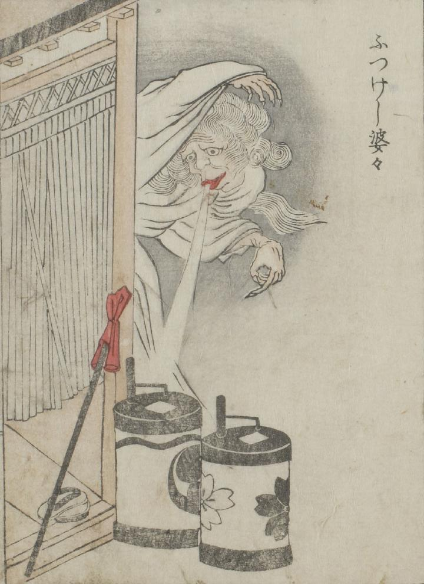

← 图鉴索引
提灯；チョウチン

白い着物の老婆が、戸前に置いてある提灯の火を吹き消している。
出典：親書誌：U426_nichibunken_0051：怪物画本；カイブツエホン／日付：2006／資源識別子：U426_nichibunken_0051_0029_0000
Copyright (c)2010- International Research Center for Japanese Studies, Kyoto, Japan. All rights reserved.